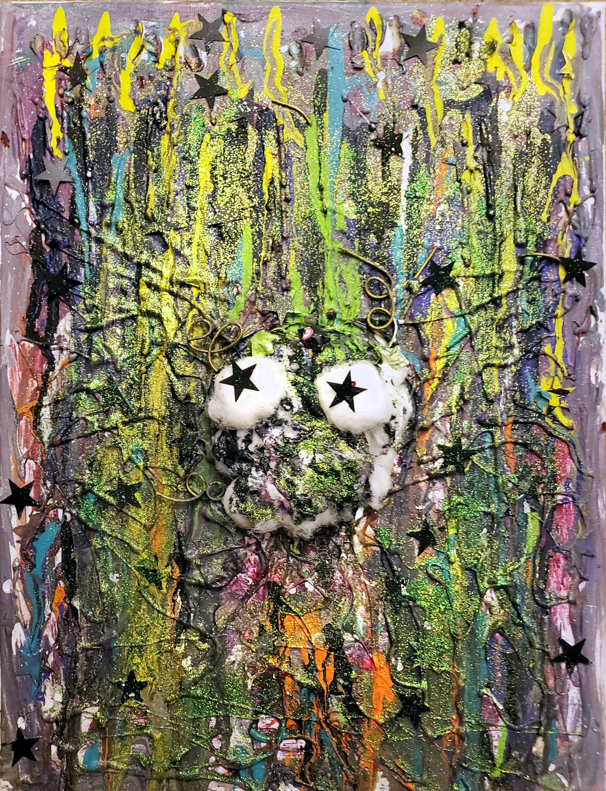
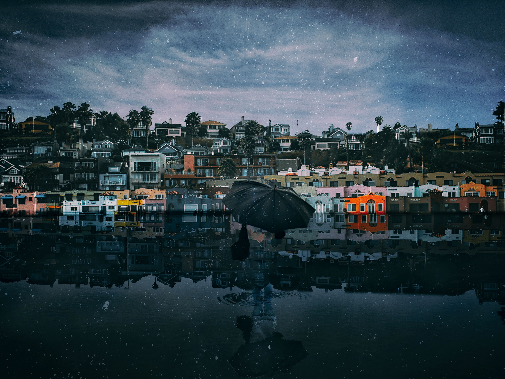
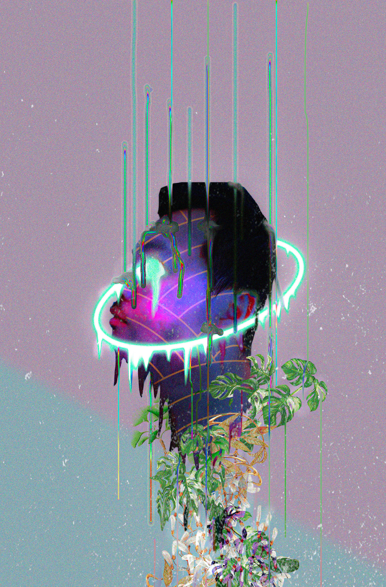
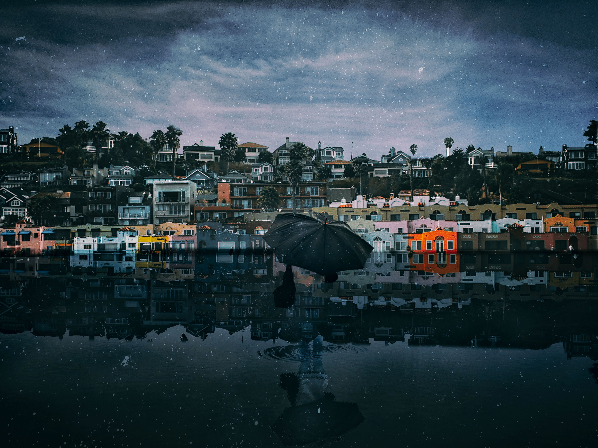
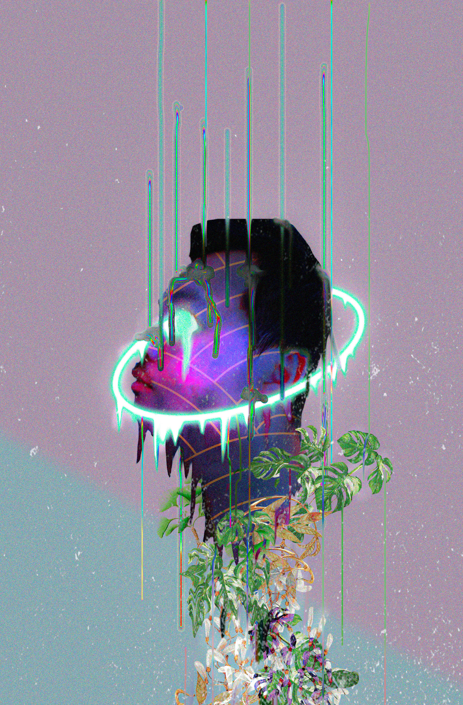

Portfolio
My name is Luan but I always go by Lee as a nickname. I have lived in the world of art full time for much of my life. I love making art, especially to create something that is not restricted by any rule. It does not have to be beautiful, but it must be precisely bizarre and unreal. I’ve been drawing and painting since I was little, but now I’m taking a new challenge in working with digital art material to elevate my art into a different perspective. To me, art appears in many forms and I love every single aspect of it no matter where it’s from or how it processes to be considered as an art .I mostly deal with the Surrealism and Dream art, which deliberately draws on unconscious inspiration through dreams to create dream-like/fantasy imagery. I feel that most of the world is a mass of unpleasant experiences. I want to embrace all of that into a form of art. As an artist, I can create a world where I intend to lure the viewer's attention by creating figures or landscapes that exist only in my dream, which likely seems to look quite bizarre. I love it when people start questioning my works and have mixed feelings whether if the works tend to disturb them or to please them. It’s fascinating to hear how people interpret my works depending on how their perspective leads them. Therefore, I don’t have any message behind most of my work, I do art for art’s sake and I love listening to people’s critique because that’s also how my inspiration comes from. I spent the effort to turn the invisible into visible. The works that I’ve made may or may not be perfectly aesthetically pleasing (depending on how it’s being viewed) but it’s the result of the creative process of me attempting to push myself to go against the norm and to embody my weirdness, developing those factors into a form of art. These projects are meant to touch that within others which is immaterial, abstract, insubstantial, "etheric". You could call this, emotions, memories, thoughts, or maybe even the spiritual self. Vivid colors and stark shapes contrasted against the realism of solid subjects produce a dreamlike aesthetic. Not everyone experiences or remembers his or her dreams, which is why I’m following this concept of dream art, not only to conceptualize my dream but also in the hope to encourage the idea of creating art from dreams.
ACRYLIC PAINTINGS
SCULPTURES
IMAGES
 


